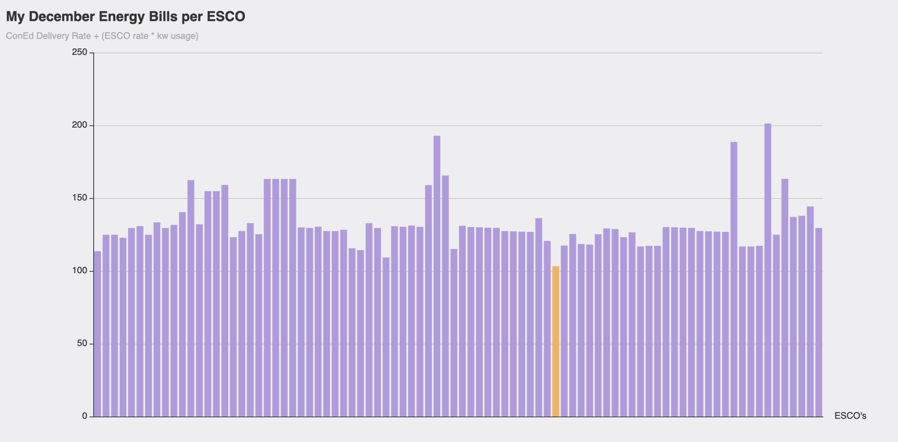
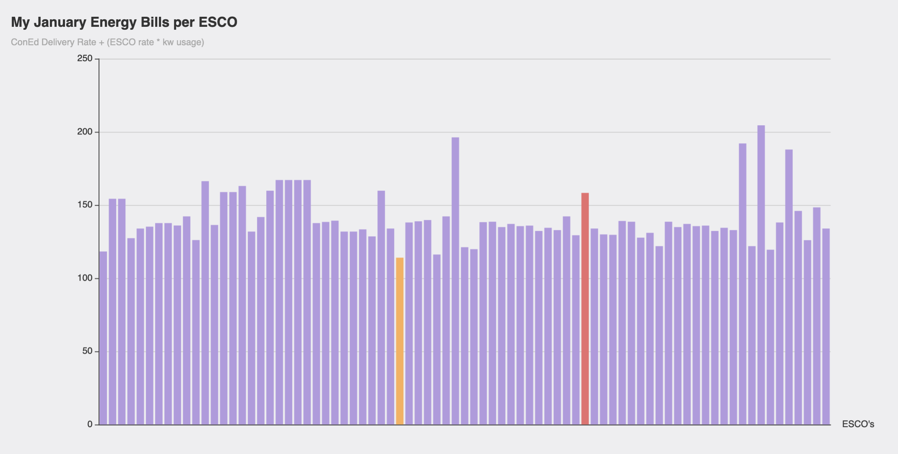
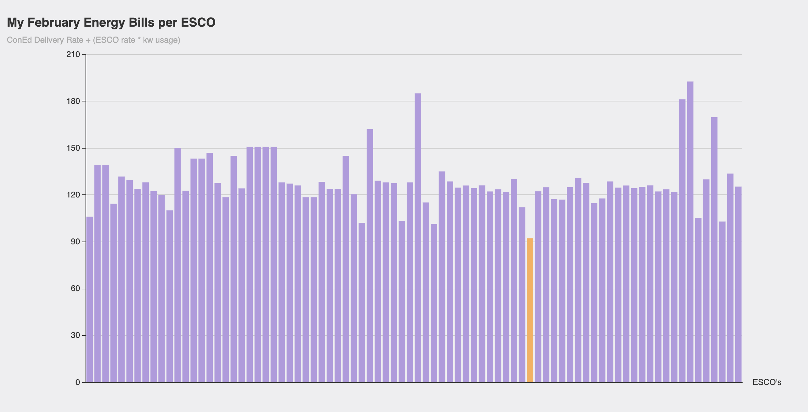

{{define "yield"}}
    <div id="homeContainer">
      <div class="title inner">
        <h1>moar<span> options for </span>power rabbit</h1>
      </div>
      <div class="second inner">
        <div class="whyContainer">
          <h2 class="why innerTitle">the why:</h2>
          <p class="why description">
            in jan 2022 nyc's electric bills sky rocketed (as did a lot of
            places). our electric grid, which is 'controlled' by conEd has many
            of faults, but NY State 'offers' citizen to 'buy' their electric
            from any ESCO (Energy Services Company). these companies can and
            "do" (ya girl didn't look into this) cleaner energy, at a fixed
            or variabvles rates, for a specific length of contract. when i went
            to the power to choose website (where one finds these rates) i was
            able to put in my zippy code and find all the offers for my area,
            however, it a) wasn't displayed great and b) incredbily confusing.
            this is my start to understanding it better.
          </p>
        </div>
        <div class="howContainer">
          <h2 class="how innerTitle">the how:</h2>
          <p class="how description">
            though we can 'buy' our energy from any esco, it's still 'delivered'
            by conEd (which is also a supplier listed ... totally not shady). if
            you take a peak at your conEd bill, you'll see it broken down into
            two main areas. your supply cost and your delivery cost. the
            delivery cost will not change per ESCO as it's not effected by the
            your supplier (it has it's own calcauation set by conEd and the
            state maybe? i believe will be seeing increases soon or some kind of
            extra taxes/fees) however, the supply will be the rate (per esco) *
            my kwh usage per whatever month. there are also some additonal fees
            on the supply side that are not included in this total (they amount
            to a few dollars, i'm not positive of their calulations so i didn't
            want to include.)
          </p>
        </div>
        <div class="nextContainer">
          <h2 class="next innerTitle">the next steps:</h2>
          <p class="next description">
            want to eventually show a line graph each month of what my last 12
            months of bills would be per esco based on historical or fixed rates
            * my historical kwh usage. possibly even a graph to better
            understand how conEd get's it's supply rate. and delivery rate at
            that.
          </p>
        </div>
      </div>
      <div class="graphs inner">
        <div class="months one">
          <a href="graphs/monthly?month=dec">
          <h3>dec 2021</h3>
          
        </a>
        </div>

        <div class="months two">
          <a href="graphs/monthly?month=jan">
            <h3>jan 2022</h3>
            
          </a>
        </div>

        <div class="months two">
          <a href="graphs/monthly?month=feb">
            <h3>feb 2022</h3>
            
          </a>
        </div>
      </div>
      <div class="thirds inner">
        <div class="additonalContainer">
          <h2 class="additonal title">the additonal:</h2>
          <p class="additonal description">
            yes we 100% need more options for cleaner energy. that takes time.
            my knowledge in clean resources is lack luster at best but i'm still
            very curious about the electric grid and how it's providing to us.
            if we have 100% clean energy, is a private company like conEd still
            the one delivering? obviously know natural gas has gone up recently
            but what else sets conEd's supply rate? how is our gov't not doing
            more (lololol i know) questions that are above my head and will take
            way more research, but here's my start
          </p>
        </div>

        <div class="dataContainer">
          <h2 class="data title">the data:</h2>
          <p class="data description">
            the data from the ESCO's is collectd from the NY Power To Choose website. the conEd data (specified on graph pages) is from
            own account. 
          </p>
        </div>
      </div>
      <div class="bottom inner">many apologies, i do not work on mobile. a matter of fact, i'm very very unfriendly there</div>
    </div>

{{end}}